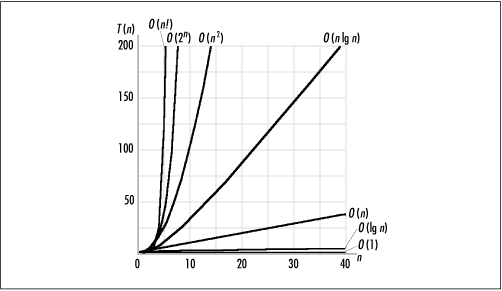

4.3 Computational Complexity
When speaking
of the performance of an algorithm, usually the aspect of
interest is its complexity,
which is the growth rate of the resources (usually time) it
requires with respect to the size of the data it processes.
O -notation describes an
algorithm's complexity. Using O
-notation, we can frequently describe the worst-case
complexity of an algorithm simply by inspecting its overall
structure. Other times, it is helpful to employ techniques
involving recurrences and summation formulas (see the related
topics at the end of the chapter), and statistics.
To understand complexity, let's look at one
way to surmise the resources an
algorithm will require. It should seem reasonable that if we
look at an algorithm as a series of k statements, each with some cost
(usually time) to execute, ci ,
we can determine the algorithm's total cost by summing the
costs of all statements from c1 to ck in whatever order each is
executed. Normally statements are executed in a more
complicated manner than simply in sequence, so this has to be
taken into account when totaling the costs. For example, if
some subset of the statements is executed in a loop, the costs
of the subset must be multiplied by the number of iterations.
Consider an algorithm consisting of k = 6 statements. If statements 3, 4,
and 5 are executed in a loop from 1 to n and the other statements are
executed sequentially, the overall cost of the algorithm
is:
T(n) = c1 + c2 + n(c3 + c4 + c5) + c6
Using the rules of O -notation, this algorithm's
complexity is O (n) because the constants are not
significant. Analyzing an algorithm in terms of these constant
costs is very thorough. However, recalling what we have seen
about growth rates, remember that we do not need to be so
precise. When inspecting the overall structure of an
algorithm, only two steps need to be performed: we must
determine which parts of the algorithm depend on data whose
size is not constant, and then derive functions that describe
the performance of each part. All other parts of the algorithm
execute with a constant cost and can be ignored in figuring
its overall complexity.
Assuming T
(n) in the previous
example represents an algorithm's running time, it is
important to realize that O
(n), its complexity, says
little about the actual time
the algorithm will take to run. In other words, just because
an algorithm has a low growth rate does not necessarily mean
it will execute in a small amount of time. In fact,
complexities have no real units of measurement at all. They
describe only how the resource being measured will be affected
by a change in data size. For
example, saying that T (n) is O
(n) conveys only that
the algorithm's running time varies proportionally to n, and that n is an upper bound for T (n)
within a constant factor. Formally, we say that T (n)
 cn, where c is a constant factor that accounts
for various costs not associated with the data, such as the
type of computer on which the algorithm is running, the
compiler used to generate the machine code, and constants in
the algorithm itself. cn, where c is a constant factor that accounts
for various costs not associated with the data, such as the
type of computer on which the algorithm is running, the
compiler used to generate the machine code, and constants in
the algorithm itself.
Many complexities occur frequently in
computing, so it is worthwhile to become familiar with them.
Table
4.1 lists some typical situations in which common
complexities occur. Table
4.2 lists these common complexities along with some
calculations illustrating their growth rates. Figure
4.1 presents the data of Table
4.2 in a graphical form.
Table 4.1. Some Situations Wherein
Common Complexities Occur
|
O(1) |
Fetching the first element from a set
of data |
|
O(lg
n) |
Splitting a set of data in half, then
splitting the halves in half, etc. |
|
O(n) |
Traversing a set of data |
|
O(n lg n) |
Splitting a set of data in half
repeatedly and traversing each half |
|
O(n2) |
Traversing a set of data once for each
member of another set of equal size |
|
O(2n) |
Generating all possible subsets of a
set of data |
|
O(n!) |
Generating all possible permutations of
a set of data |
Table 4.2. The Growth Rates of the
Complexities in Table
4.1
|
O(1) |
1.000E+00 |
1.000E+00 |
1.000E+00 |
1.000E+00 |
1.000E+00 |
1.000E+00 |
|
O (lg
n) |
0.000E+00 |
4.000E+00 |
8.000E+00 |
1.200E+01 |
1.600E+01 |
2.000E+01 |
|
O (n) |
1.000E+00 |
1.600E+01 |
2.560E+02 |
4.096E+03 |
6.554E+04 |
1.049E+06 |
|
O (n lg n) |
0.000E+00 |
6.400E+01 |
2.048E+03 |
4.915E+04 |
1.049E+06 |
2.097E+07 |
|
O (n2) |
1.000E+00 |
2.560E+02 |
6.554E+04 |
1.678E+07 |
4.295E+09 |
1.100E+12 |
|
O
(2n) |
2.000E+00 |
6.554E+04 |
1.158E+77 |
— |
— |
— |
|
O (n!) |
1.000E+00 |
2.092E+13 |
— |
— |
— |
— |

Just as the complexity of an algorithm
says little about its actual running time, it is important to
understand that no measure of complexity is necessarily
efficient or inefficient. Although complexity is an indication
of the efficiency of an algorithm, whether a
particular complexity is considered efficient or inefficient
depends on the problem. Generally, an efficient algorithm is
one in which we know we are doing the best we can do given
certain criteria. Typically, an algorithm is said to be
efficient if there are no algorithms with lower complexities
to solve the same problem and the algorithm does not contain
excessive constants. Some problems are intractable, so there
are no "efficient" solutions without settling for an
approximation. This is true of a special class of problems
called NP-complete problems
(see the related topics at the end of the chapter).
Although an algorithm's complexity is an
important starting point for determining how well it will
perform, often there are other things to consider in practice.
For example, when two algorithms are of the same complexity,
it may be worthwhile to consider their less significant terms
and factors. If the data on which the algorithms' performances
depend is small enough, even an algorithm of greater
complexity with small constants may perform better in practice
than one that has a lower order of complexity and larger
constants. Other factors worth considering are how complicated
an algorithm will be to develop and maintain, and how we can
make the actual implementation of an algorithm more efficient.
An efficient implementation does not always affect an
algorithm's complexity, but it can reduce constant factors,
which makes the algorithm run faster in practice. |